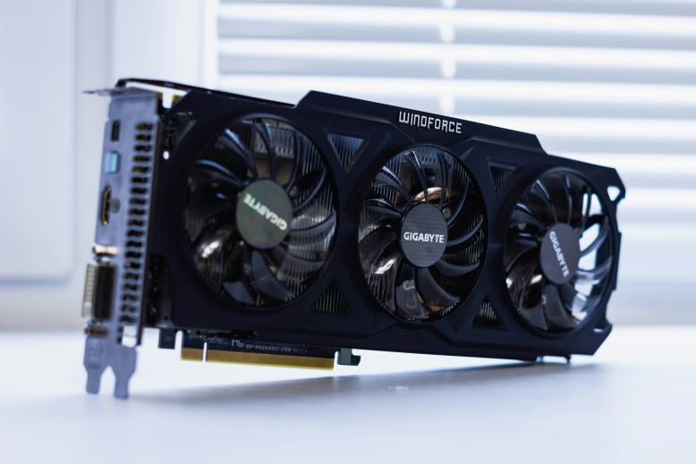
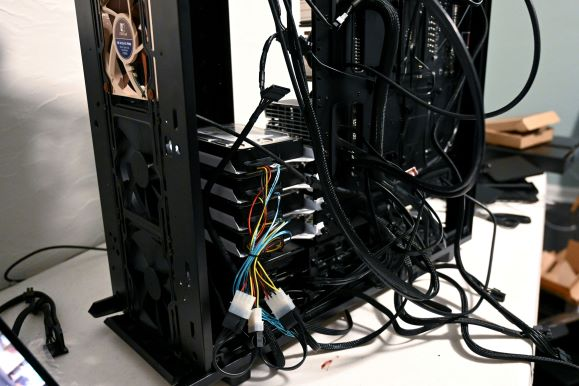
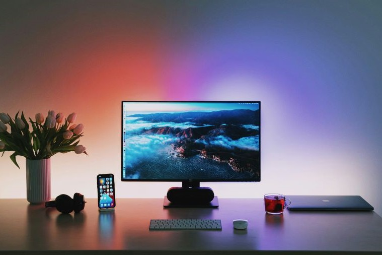

CPU vs GPU - key differences
Key differences
- CPU is your computer's brain - handles everyday tasks like browsing and normal running programs easily.
- CPU specializes in graphics - designed for gaming, video editing and processing images super-fast.
- CPUs have a few powerful cores - great for complex tasks that need quick thinking and decision-making.
- GPUs have thousands of smaller cores - perfect for doing many simple calculations at the same time.
- Both work together in your computer - CPU manages operations while GPU handles graphics and parallel work.
When building or buying a computer, understanding the difference between CPU and GPU helps you make better choices. Both are very important parts of modern computers, but they work in different ways.
A CPU handles your everyday computing tasks, while a GPU takes care of graphics and parallel processing. Knowing when you need more CPU power versus GPU power can save you money and give you better performance for your specific needs.
CPU - Central Processing Unit
The CPU, or Central Processing Unit, is the main brain of your computer. The full form of CPU is the Central Processing Unit, and it handles most of your computer's basic operations. When you open programs, browse the internet, or type documents, your CPU is doing the work. In simple terms, a CPU is the processor that follows instructions and completes tasks one by one.
A CPU takes instructions from your programs, does the work, and gives you the results. It has a small number of strong cores that are really good at solving complicated problems. Most regular computers have between 4 and 16 cores. Each core can do its own task, which is why you can browse the internet, listen to music, and edit documents all at the same time. CPUs are designed to be flexible and can handle many different types of work easily.
GPU - Graphics Processing Unit
The GPU, or Graphics Processing Unit, is a special processor designed to handle images and graphics. Unlike a CPU, a GPU can handle thousands of simple calculations at the same time, making it great for tasks like building AI models or rendering game graphics.



GPUs work by breaking down complex visual tasks into smaller pieces and processing them all at once. While a CPU might have 8 or 16 cores, a GPU can have thousands of smaller cores. Working together, these cores can process huge amounts of information very quickly, which is why GPUs are so important for graphics rendering, video editing, and AI.
GPUs come in two types - integrated (iGPU) and dedicated (dGPU). An iGPU is built directly into the processor and is good enough for everyday tasks like browsing and watching videos. A dGPU is a separate, more powerful chip with its own memory, built for heavier tasks like gaming, video editing and AI.
CPU vs GPU - Key differences
| Feature | CPU | GPU |
|---|---|---|
| Cores | Few powerful cores (2-32) | Thousands of smaller cores |
| Design Purpose | General computing tasks | Parallel processing tasks |
| Processing Style | Sequential (one after another) | Parallel (many at once) |
| Best For | Complex individual tasks | Repetitive simple tasks |
| Memory | Large cache, fast access | High bandwith memory |
| Flexibility | Very flexible, handles any task | Specialized for specific work |
Performance
The difference between CPU and GPU performance depends on the task. CPUs work best at tasks requiring quick decision-making and complex logic because their cores are very powerful. GPUs are great for doing a lot of calculations over and over on big datasets because they can handle a lot of tasks at once. In general, neither is better than the other; they're just made for different kinds of work.
Power consumption
Power usage varies based on workload for both processors. Gaming and rendering utilise more power on high-end GPUs. CPU power spikes for intensive programs, but is low during normal processing. Modern processors of both types include power-saving features. Your actual electricity costs depend more on how you use your computer than on which component you have.
Cost analysis
When comparing features of CPU and GPU, prices vary widely based on performance level. Entry-level CPUs and GPUs both start around similar price points for basic use. If you want a GPU for serious gaming, it will usually cost more than an average CPU. Top-of-the-line professional models of either type are very expensive. The best approach is to buy what fits your needs rather than just going for the priciest option.